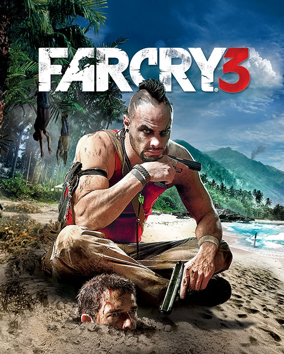

▼MAIS▼

RECURSOS PRINCIPAIS
VISÃO GERAL DO JOGO
Além do alcance da civilização está uma ilha sem lei dominada pela violência.
É aí que você se encontra preso, encurralado entre um conflito sangrento de senhores da guerra
psicóticos e rebeldes indígenas. Lutando para sobreviver, sua única esperança de fuga é através
do cano de uma arma. Descubra os segredos obscuros da ilha e leve a luta até o inimigo; improvise
e use o ambiente para sua vantagem; seja mais esperto que seus habitantes impiedosos e malucos.
Tenha cuidado com a beleza e mistério dessa ilha de insanidade... Você precisará de mais do que
sorte para escapar vivo.